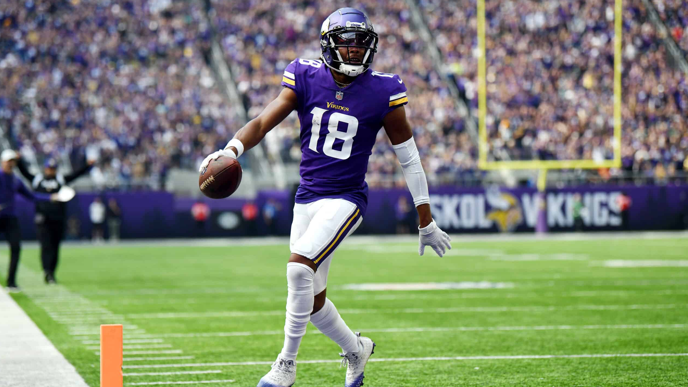
Hey fellas, it is so good to have football back! Week One is in the books and Week Two is kinda a silly week for Power Rankings, the sample size is so smol.
Matchup of the Week: Show Me the Mooney (1-0) v. Jus-Jonzin-4-Herb (1-0)
Waiver Wire Wizard: Kris takes a swing with $22 on Chark. I didn’t love any move really but I’m giving this to Kris for making his move after a tough week.
Week Two Power Rankings
1. One Snake One Kupp (1-0) ⬆️
My top trio of Swift, Barkley and Kupp looked very good, coming in at WR2, RB2, RB3. Shitty to see Swift on the injury report this week, but hoping they’re just being extra cautious.
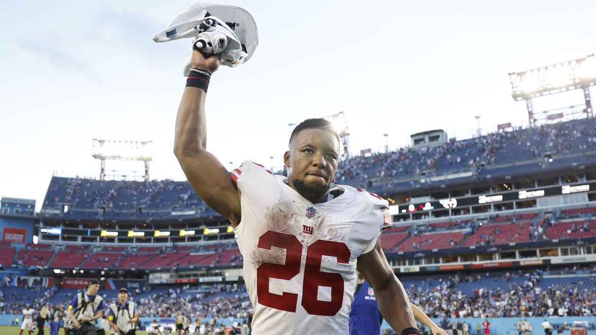
2. Show Me the Mooney (1-0) ⬆️
Allen, DeVante and Chase, yeesh. I don’t give Matt any credit since he didn’t draft his team.
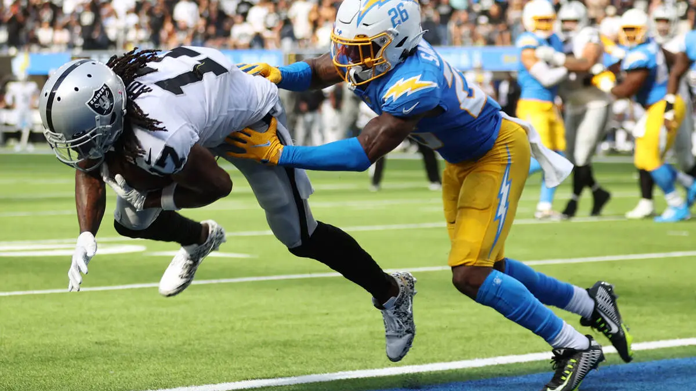
3. Can You Diggs It? (1-0) ⬇️
Tony picked up where he left off, and I dropped him in the rankings for no good reason. Allen and Diggs look so locked in, this team is very aptly named.
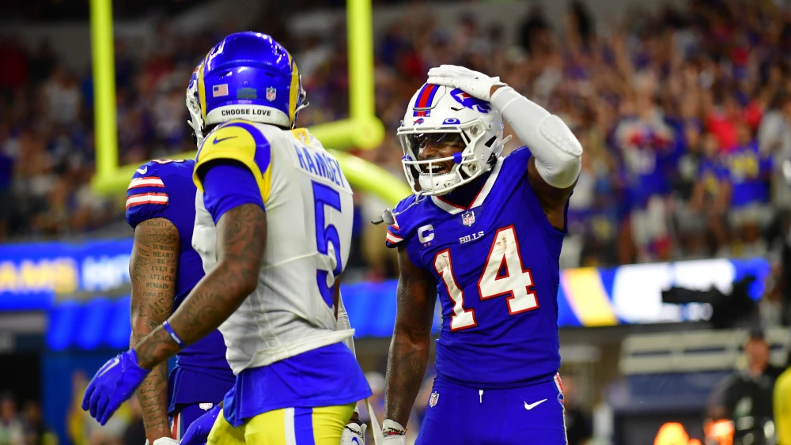
4. Unpaid Bills (0-1) ⬇️
Solid week but ran into a great one. Some inspiring performances but some question marks too. I’m very confused by the Kamara game. Ouchie sitting Patterson, let’s see if you can guess right on that one this week? (IDK why I just never believe in Cordarrelle)
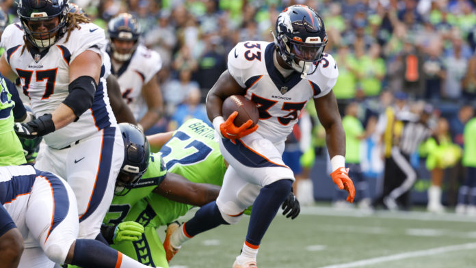
5. Jus-Jonzin-4-Herb (1-0) ⬆️
God damn, how was Jefferson so open all first half - that dude is so scary. Andy will need every drip of that this year too, RB looks sus - lots of guessing each week coming up.
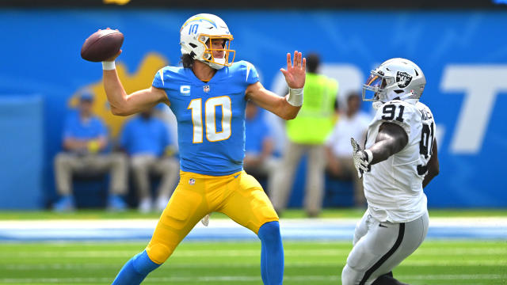
6. The Hurts Locker (0-1) ⬇️
It is tough to recover from a zero, but I thought Joel had something cooking for a while. It was enough to make me a little nervous about our matchup. Only three total TDs, that number will go up.
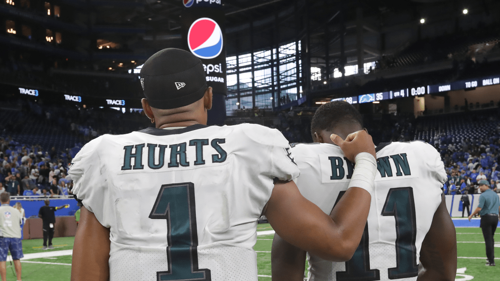
7. Sweet Brotha Numpsay (1-0)
The worst winner of the week! Pangy had some solid nice results from Mixon and St. Brown, with Gibson looking strong on the bench. Good thing too, since he will likely need to slide in for Mitchell, or first major injury of the FFB season.
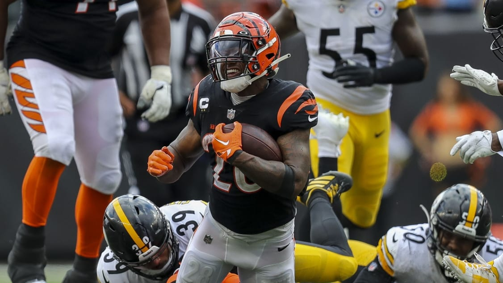
8. 8D (0-1) ⬇️
PJ wasted a Mahomes gem with no other player scoring a TD on his team. Michael Thomas didn’t disappoint, though he was on the bench. We all will be keeping a close eye on that through the season, fun story. I noticed him not getting doubled like his old days - maybe that won’t be an option with the Saints WR depth.
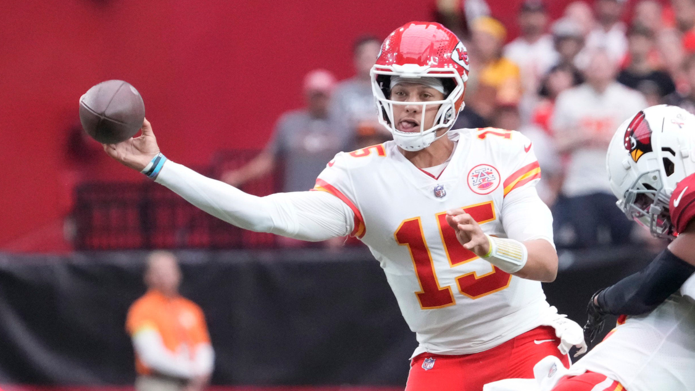
9. Wheelin & Thielen (0-1) ⬇️
Our oldest team left Week 1 a little banged up, after a sub-100 output. JT looked great of course, but no one else, including the bench.
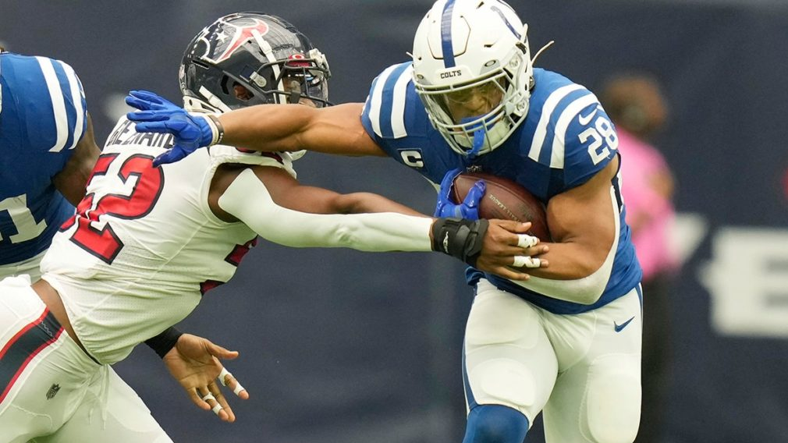
💩 Hollywood Browns (0-1)
They are who we thought they were (besides Miles Sanders scoring a TD!) Better start looking for some trades.
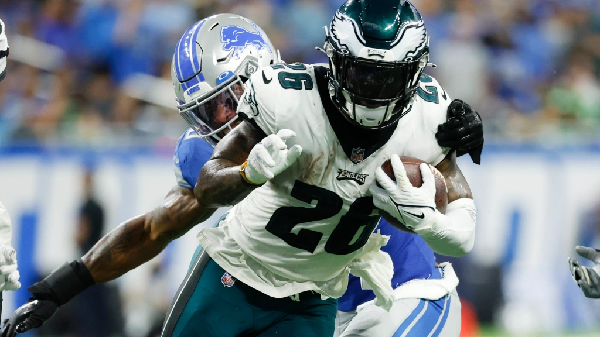
Good luck this week everyone besides Joel. Stay healthy! - 🐍
Pressure is something you feel when you don’t know what the hell you’re doing.
- Peyton Manning
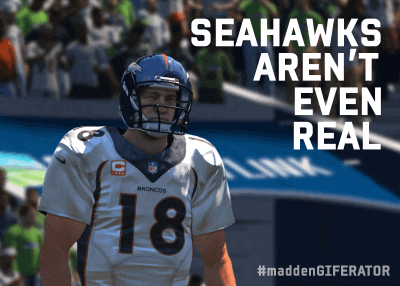